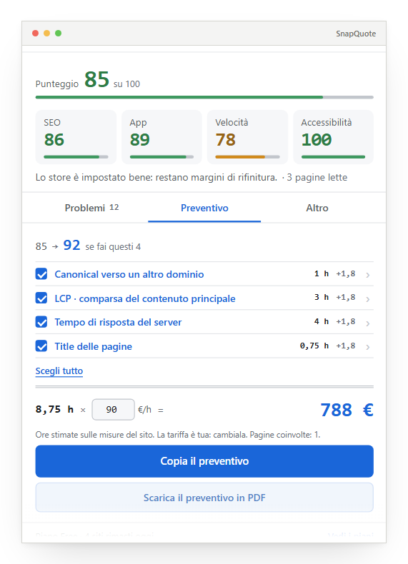
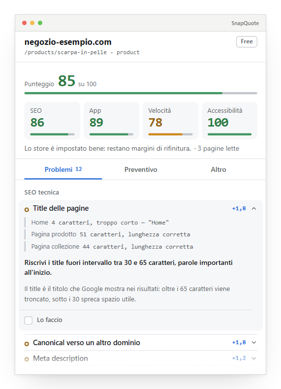
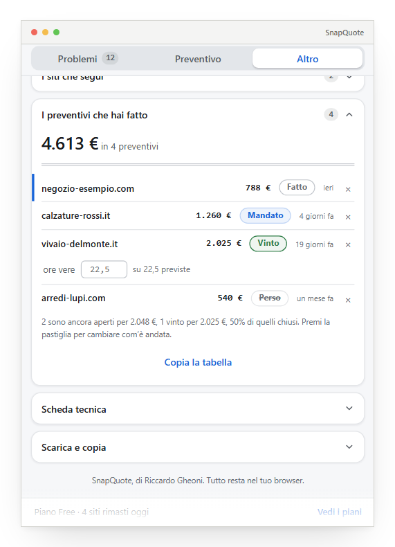
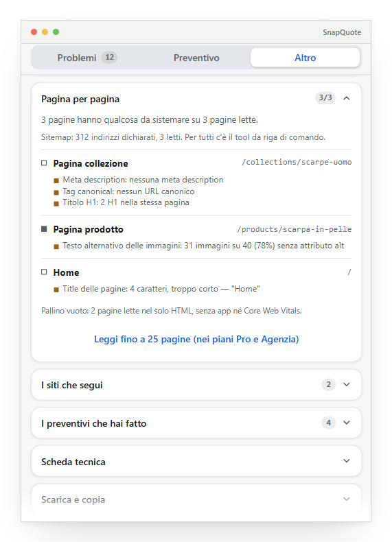

Estensione Chrome · niente esce dal browser
Da un sito a un preventivo, in dieci secondi
Apri il sito di un cliente e premi l’icona. SnapQuote trova cosa c’è da sistemare; tu spunti quello che faresti e il punteggio si rifà davanti a te: 85 → 92. Sotto ci sono le ore, il prezzo alla tua tariffa e un preventivo pronto da mandare.
Preferisci un parere a mano? Mandami il sito, ti rispondo io.
- Gratis per cominciare
- Nessun account
- Shopify, WooCommerce, WordPress e altri

Per chi vende lavoro sui siti, e per chi ne ha uno
Freelance e web designer
Il preventivo lo prepari mentre sei ancora al telefono col cliente, con le ore e la tua tariffa.
Agenzie
Un marchio per ogni cliente, il registro di cosa hai venduto e il rapporto del lavoro fatto.
Chi ha un sito suo
Sai cosa sistemare, in che ordine e quanto vale, prima di chiamare qualcuno.
Come funziona
Tre passi, tutti dentro il popup. Nessuna pagina da aprire, nessun file da caricare.
Apri il sito e premi l’icona
SnapQuote legge la pagina aperta dopo che gli script hanno girato, più altre tre del sito. In una decina di secondi hai il punteggio e l’elenco di cosa sistemare.
Spunta quello che faresti
Ogni rilievo dice quanti punti vale. Spunti, e il punteggio viene ricalcolato con la stessa formula: non è una somma, è quello che vedrai alla prossima analisi.
Manda il preventivo
Ore stimate sulle pagine coinvolte, la tua tariffa, il totale. Lo copi già scritto per l’email, o lo scarichi in PDF col tuo logo.
Provalo qui
Il sito di esempio delle schermate, negozio-esempio.com. Spunta e cambia la tariffa.
Punteggio
Spunta almeno un intervento per vedere il conto.
Il testo che copia
Numeri veri: il punteggio di ogni combinazione è quello che calcola l’estensione su questo sito, ricalcolato e non sommato.
Cosa controlla
Una trentina di controlli in quattro aree, con soglie scritte. Sono i quattro voti che vedi in cima al popup.
SEO tecnica
Quello che Google e gli assistenti IA leggono per capire il sito.
- Title, description, H1, canonical
- Dati strutturati e indicizzabilità
- Sitemap, lingue, anteprime social
- ChatGPT e Gemini, e il file llms.txt
Funzionalità e app
Gli strumenti che fanno tornare chi compra, riconosciuti mentre girano.
- Email marketing
- Recensioni
- Analytics e pixel
- Anche dentro un tag manager
Velocità e peso
Misurata sulla navigazione vera della pagina aperta, non simulata.
- Risposta del server
- Comparsa del contenuto (LCP)
- Stabilità del layout
- Peso di script, CSS e immagini
Accessibilità nuova
Quello che ferma chi legge male o usa un lettore di schermo.
- Contrasto del testo, soglie WCAG
- Bottoni e link senza un nome
- Misurata sulla pagina disegnata

Ogni rilievo ha la sua prova
Il dato misurato, non un voto
«Home: 4 caratteri, troppo corto». Ogni rilievo dice cosa ha trovato e su quale pagina, perché conta e cosa fare. E dove una cosa non si è potuta misurare, lo scrive invece di dartela per buona.
- La prova, pagina per pagina
- Perché conta e cosa fare, in due righe
- Quanti punti vale sistemarla
Otto cose che un normale audit non fa
Trovare i difetti di un sito lo fanno in tanti. SnapQuote parte da lì e arriva fino al lavoro venduto, e poi a quello fatto.
Il registro
Tiene i conti di quello che vendi
Ogni preventivo che copi resta segnato, e una pastiglia lo porta da fatto a mandato, vinto o perso. In cima vedi quanto vale il lavoro che aspetti e quanti ne chiudi.
- Il valore ancora aperto, a colpo d’occhio
- Segni le ore vere, e impara di quanto sbagli
- Si copia in un foglio di calcolo

Pagina per pagina
Ti dice su quale pagina, non solo quante
«Quattro pagine senza description» non basta a chi poi deve aprirle. La lista di lavoro va per indirizzo, con le pagine messe peggio in cima e il difetto scritto accanto. Con Pro e Agenzia legge fino a 25 pagine prese dalla sitemap.

Quanti punti vale ogni correzione
Non «priorità alta»: +1,8. L’elenco è ordinato per quello, e il punteggio promesso è ricalcolato, cioè quello che vedrai davvero alla prossima analisi.
Il confronto con un concorrente
Analizzi il loro sito e torni sul tuo: stessi controlli, stesse soglie, e l’elenco di dove sono messi meglio. È la pagina che chiude un preventivo.
Il codice, non il compito
Il canonical con l’indirizzo giusto, il JSON-LD del prodotto col nome vero, il file llms.txt già compilato. Si copia con un tocco. I testi da scrivere non li inventa.
Le bozze, scritte sul tuo computer
Dove Chrome mette a disposizione il suo modello linguistico locale, propone una description o un title partendo dalla pagina. Nessuna chiave API, niente che esce.
A lavoro finito, la prova
Dalla seconda analisi dello stesso sito, il rapporto del lavoro svolto: 61 → 94, cosa hai sistemato, cosa è peggiorato, cosa resta. È il documento con cui ti fai riconfermare.
Dice quando non sa
Un controllo che non si è potuto fare esce dal punteggio invece di passare per superato. Un’area senza misure mostra un trattino, non un cento regalato.
Il sito dei tuoi clienti resta sul tuo computer
L’analisi gira nel tuo browser e non passa da nessun server: né mio, né di altri.
Tutto dentro Chrome
L’analisi nasce e finisce nel tuo browser. Gli indirizzi che apri, i preventivi e il registro restano lì.
Tre permessi, i minimi
Vede solo la scheda su cui premi l’icona, e solo quando la premi. Niente accesso a tutti i siti, niente cronologia.
Nessun account
Non ti registri. La licenza dei piani a pagamento è una chiave che l’estensione verifica da sola, anche senza rete.
Piani
L’analisi e il preventivo da copiare sono gratis. I piani a pagamento servono a consegnare: PDF col tuo nome, più pagine, nessun limite.
I piani a pagamento non sono ancora attivi. Lascia la tua email e ti scrivo appena lo sono: nessun pagamento adesso, nessun impegno.
Free
0€
per sempre
- Tutti i controlli, sulla pagina aperta e altre tre
- 5 siti al giorno, rianalizzabili quante volte vuoi
- Il preventivo da copiare e il registro
- Niente PDF da consegnare
- Niente nome né logo sui documenti
Pro
19€ / mese
per chi lavora da solo
- Tutti i siti che vuoi, non cinque al giorno
- Fino a 25 pagine per analisi, dalla sitemap
- Preventivo e referto in PDF, pronti da mandare
- I documenti escono col tuo nome e il tuo logo
- Il rapporto che mostra al cliente cos’è migliorato
Agenzia
49€ / mese
per chi lavora su più clienti
- Tutto quello che c’è in Pro
- Fino a 10 clienti, ognuno col suo nome e il suo logo
- Supporto via email entro un giorno
Quando apriranno: dopo il pagamento ricevi per email una chiave da incollare nell’estensione. Nessun account da creare, si disdice quando vuoi.
Domande
Funziona solo con Shopify?
No. Riconosce Shopify, WooCommerce, WordPress, PrestaShop, Magento, Wix, Squarespace e Webflow, e adatta i consigli alla piattaforma. Sugli altri siti fa gli stessi controlli, con consigli generali.
I dati dei miei clienti escono dal computer?
No. L’analisi gira dentro Chrome e non esiste un server che la riceva. Preventivi, registro e marchio restano nella memoria dell’estensione, sul tuo computer.
Da dove vengono le ore del preventivo?
Ogni tipo di intervento ha una stima di partenza, che cresce con le pagine coinvolte: quelle sono contate davvero sull’analisi. La tariffa è tua e il preventivo dice da dove vengono i numeri. Se segni le ore che ci hai messo davvero, dopo tre lavori ti dice di quanto sbagli in media.
Il punteggio è quello di Google?
No, ed è meglio così: è la quota di controlli superati, pesati per importanza, in quattro aree. Non promette un posizionamento; dice quanta parte del lavoro tecnico è fatta, e quanto ne fa ogni correzione.
Quante pagine legge?
Con Free la pagina aperta e altre tre, scelte sempre allo stesso modo dalla sitemap o dai link della home: così il punteggio non cambia a seconda della pagina da cui sei partito. Con Pro e Agenzia fino a venticinque.
Posso metterci il mio logo?
Sì, con Pro e Agenzia: nome e logo escono sul preventivo in PDF, sul referto e sul rapporto del lavoro svolto. Con Agenzia ne salvi fino a dieci, uno per cliente.
Quando esce?
Lascia la tua email qui sotto e ti scrivo il giorno che è sul Chrome Web Store, e di nuovo quando aprono Pro e Agenzia. Nient’altro.
Scrivimi
Rispondo io, di solito entro un giorno.